Character: Elegant, complex, rich, with notes of honey, white flowers, tropical fruits, and minerality.
Producer: Capichera
45€/10€
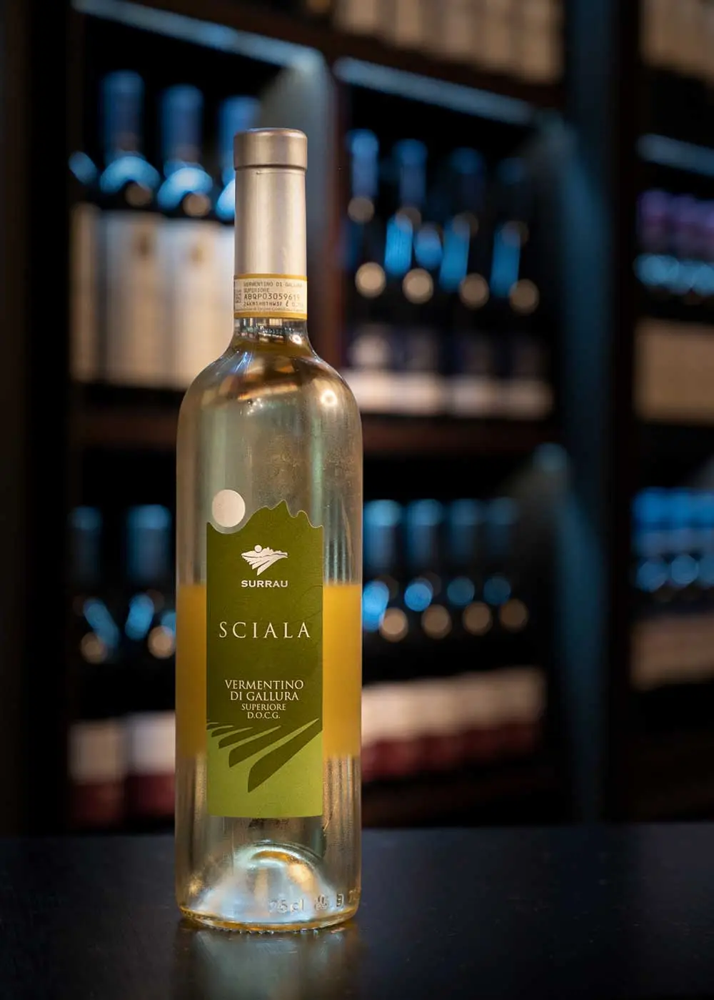
"Surrau "Sciala"
Type: Dry white
Grape variety: Vermentino
Alcohol: 13%
Character: Fresh, elegant, with notes of lemon, green apple, and sea salt.
Producer: Vigne Surrau
35€/6€
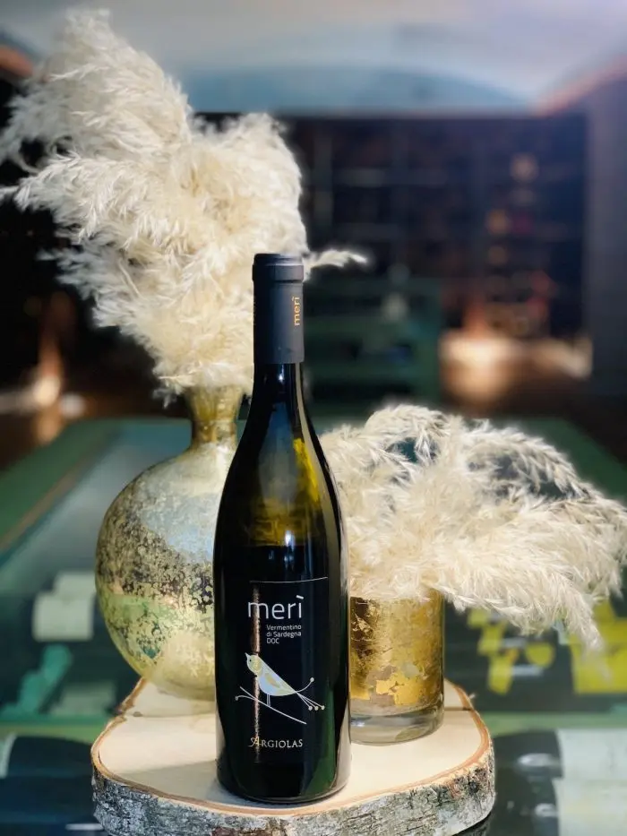
Argiolas "Merì"
Type: Dry white
Grape variety: Vermentino
Alcohol: 12.5%
Character: Fresh, with citrus, green apple, and light almond notes.
Producer: Argiolas
35€/6€
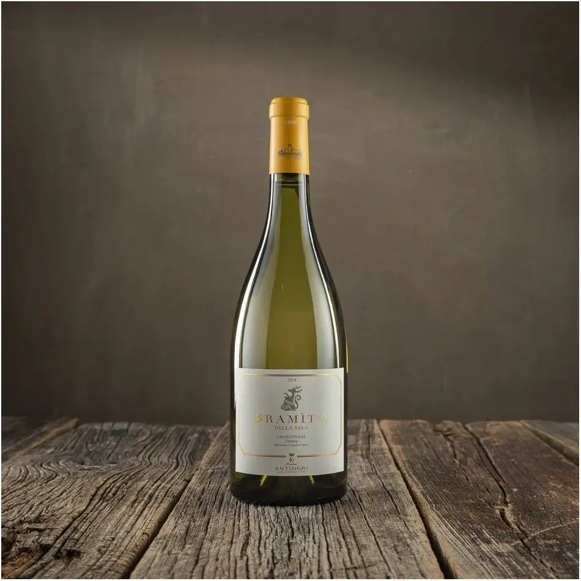
Bramito
Type: Dry white
Grape variety: 100% Chardonnay
Alcohol: 13%
Character: Elegant and fresh, with notes of citrus fruits, green apple, and a subtle minerality. Smooth and round on the
palate with a vibrant finish.
Producer: Marchesi Antinori
50€/10€
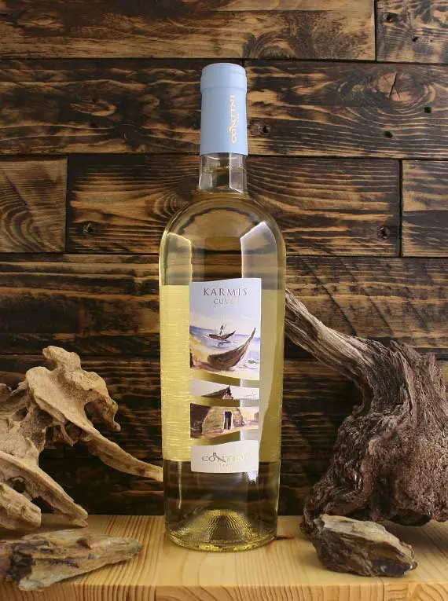
Karmis
Type: Dry white
Grape variety: 100% Vermentino
Alcohol: 13.5%
Character: Fresh and aromatic with notes of citrus fruits, green apple, and delicate floral hints. A smooth, balanced
wine with crisp acidity and a long finish.
Producer: Cantina Mesa
50€/10€
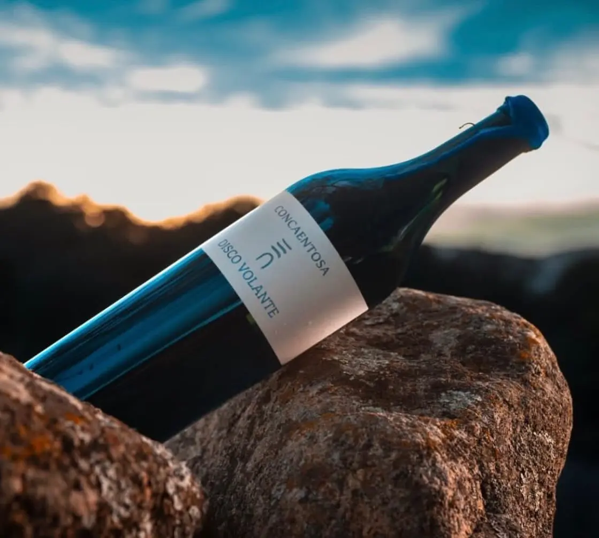
Discovolante
Type: Dry white
Grape variety: 100% Vermentino
Alcohol: 13%
Character: Crisp and fresh, with vibrant citrus and green apple notes. It has a subtle minerality, with a clean and
smooth finish.
Producer: Cantina di Santadi
1600€
Red Wine
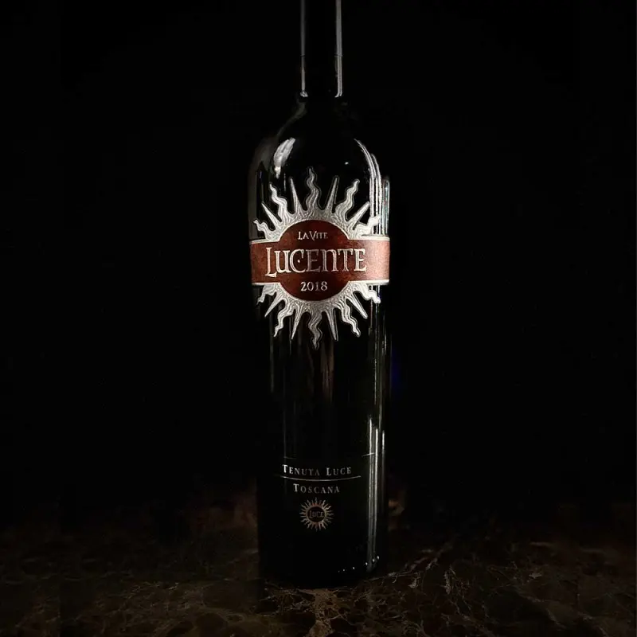
Lucente
Type: Dry red
Grape variety: Merlot, Sangiovese
Alcohol: 14%
Character: Rich and elegant, with aromas of ripe red fruits, blackberries, and plums, complemented by hints of vanilla
and spice. Smooth tannins and a long, velvety finish.
Producer: Tenuta Luce (Frescobaldi)
45€/8€
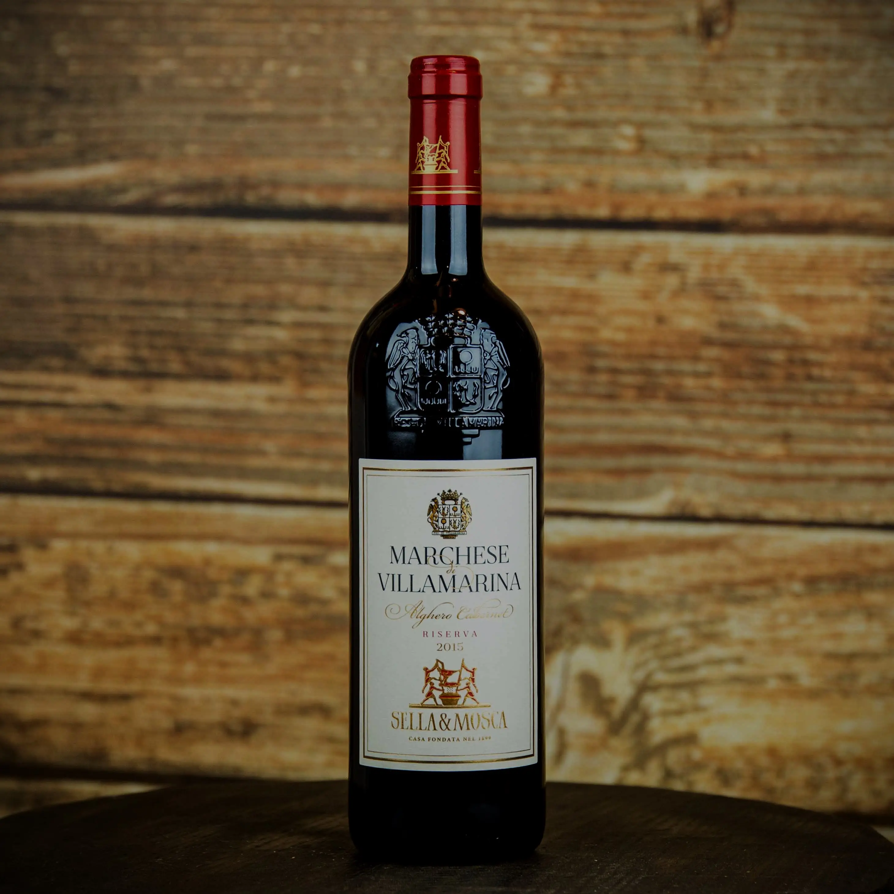
Marchese di Villamarina
Type: Dry red
Grape variety: 100% Cabernet Sauvignon
Alcohol: 14%
Character: Full-bodied and elegant, with deep aromas of blackberries, cassis, tobacco, and spices. Silky tannins and a
long, persistent finish.
Character: Intense and complex, with aromas of ripe dark fruits, spices, leather, and hints of vanilla from oak aging.
Rich structure and long aging potential.
Producer: Argiolas
80€
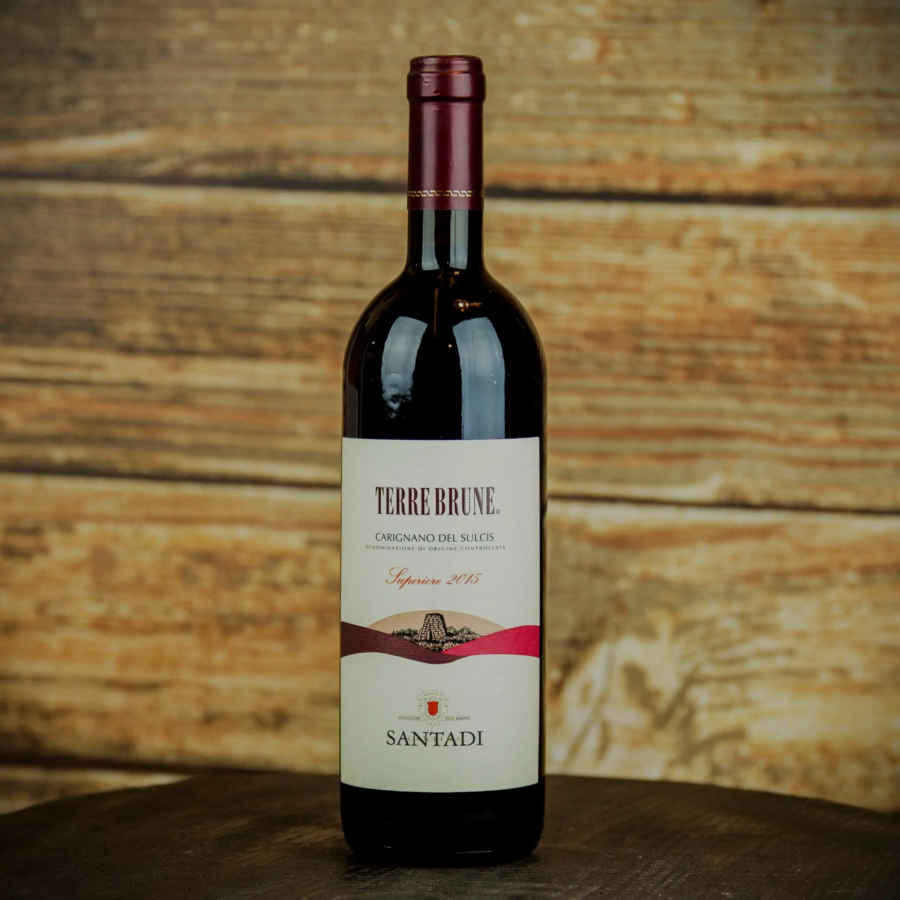
Terre Brune
Type: Dry red
Grape variety: 95% Carignano, 5% Bovale Sardo
Alcohol: 14.5%
Character: Deep, powerful, and velvety, with notes of black cherries, licorice, dark chocolate, and Mediterranean herbs.
Smooth tannins and a lingering finish.
Producer: Cantina di Santadi
45€/8€
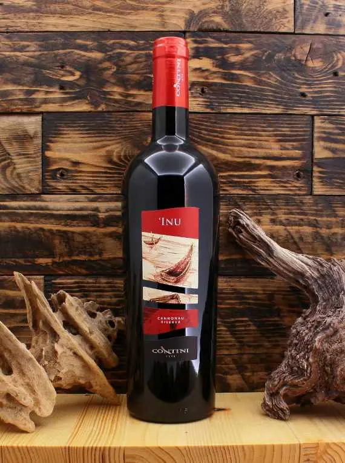
Inu
Type: Dry red
Grape variety: 100% Cannonau
Grape variety: 95% Carignano, 5% Bovale Sardo
Alcohol: 14%
Character: Intense and warm, with aromas of dried red fruits, spices, and earthy undertones. Smooth and round, with a
long, elegant finish.
Producer: Contini
27€/5€
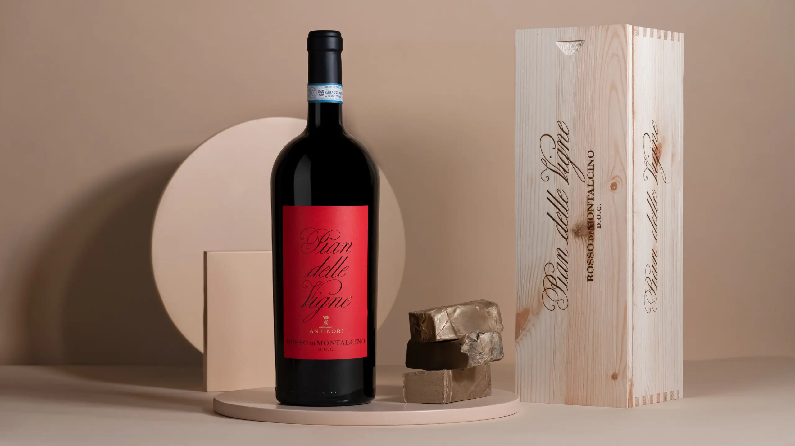
Pian delle Vigne
Type: Dry red
Grape variety: 100% Sangiovese
Alcohol: 14%
Character: Elegant and complex, with aromas of ripe red fruits, cherries, tobacco, and hints of vanilla and spices from
oak aging. Well-structured, with silky tannins and a long, refined finish.
Producer: Marchesi Antinori
50€/8€
Sparkling Wine
Ferrari "Perlé"
Type: Brut sparkling wine (Metodo Classico)
Grape variety: 100% Chardonnay
Alcohol: 12.5%
Character: Elegant and refined, with fine and persistent bubbles. Aromas of ripe apple, citrus, and white flowers,
complemented by hints of toasted almonds and brioche. Well-structured with a long, mineral finish.
Producer: Ferrari Trento
65€
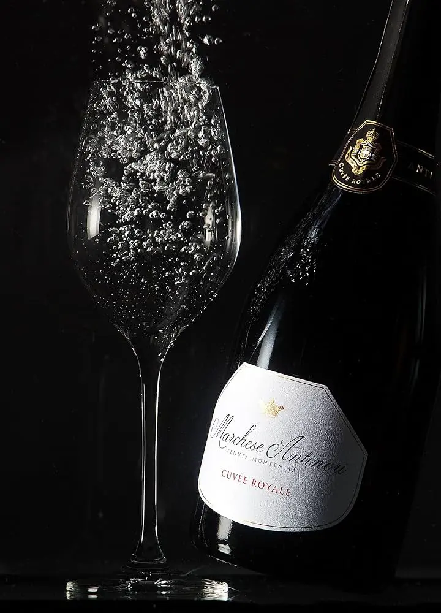
Marchese Antinori
Type: Brut sparkling wine (Metodo Classico)
Grape variety: 50% Vermentino, 50% Chardonnay
Alcohol: 12.5%
Character: Elegant and complex, with fine bubbles and aromas of white flowers, citrus, and ripe fruit. A creamy texture
on the palate, with a vibrant finish and light mineral notes.
Producer: Marchesi Antinori
65€
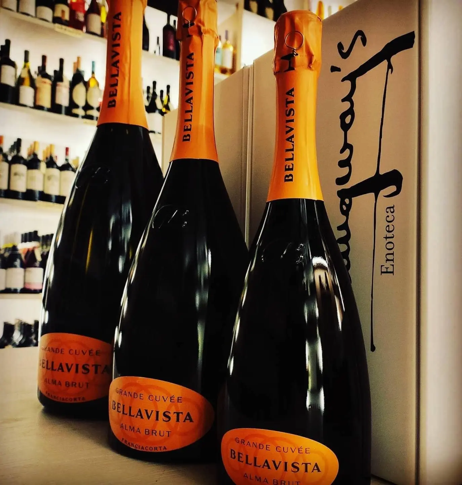
Bellavista
Type: Brut sparkling wine (Metodo Classico)
Grape variety: 75% Chardonnay, 25% Pinot Noir
Alcohol: 12.5%
Character: Elegant and refined, with a complex bouquet of white flowers, citrus, apple, and a touch of brioche. Fine,
persistent bubbles, creamy texture, and a fresh, balanced finish.
Producer: Bellavista
50€/10€
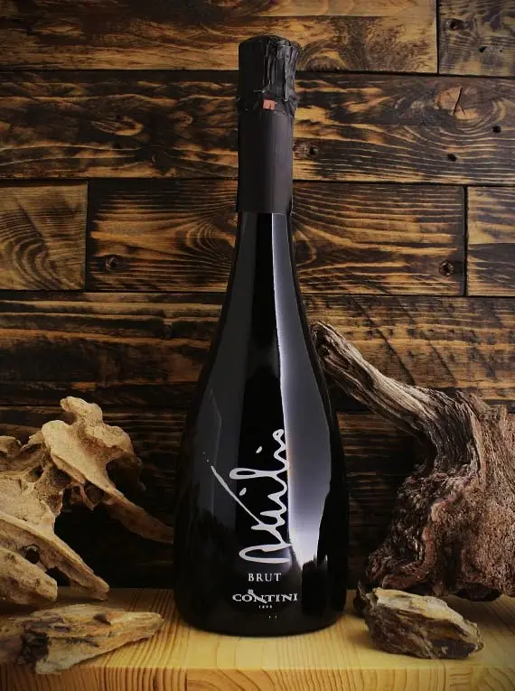
Attilio "Brut"
Type: Brut sparkling wine (Metodo Classico)
Grape variety: 100% Vermentino
Alcohol: 12%
Character: Elegant and fresh, with aromas of green apple, citrus, and light floral notes. Delicate bubbles, bright
acidity, and a crisp, clean finish.